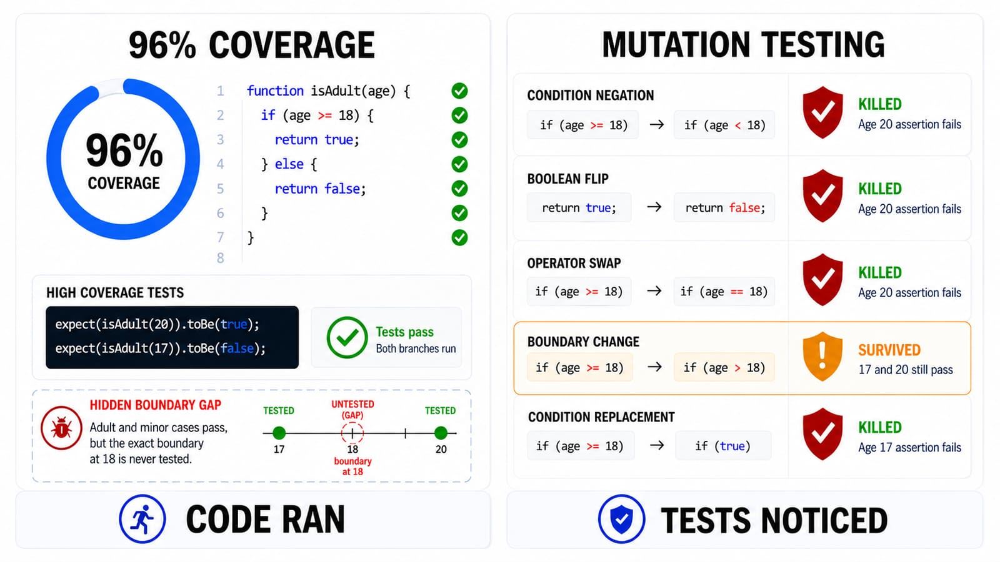
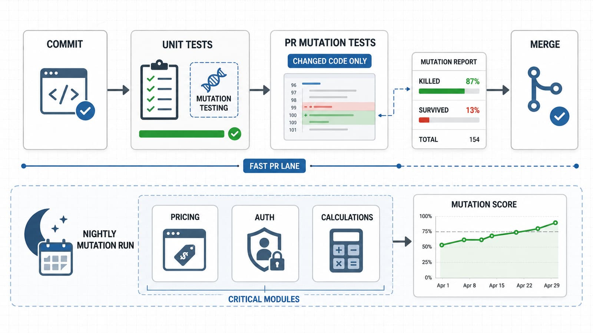

I still remember the first time someone showed me a coverage report sitting at 96% on a service that, a week later, shipped a bug a single unit test should have caught in about four seconds. The line was covered. The assertion just wasn't checking anything meaningful. That's the moment mutation testing stopped being a term I'd seen in a conference talk and became something I actually wanted to try.
What mutation testing actually is
Line and branch coverage answer one question: did this code run during the tests? They say nothing about whether the tests would notice if that code were wrong. Mutation testing answers the question coverage can't.
The idea is almost cheeky. A mutation testing tool takes your source code and deliberately breaks it, in small, mechanical ways: it flips a > to >=, changes true to false, swaps + for -, deletes a line, changes a return value. Each one of these tiny sabotaged copies is called a mutant. Then it reruns your test suite against every mutant, one at a time.
If a test fails, the mutant is "killed" — good, your tests caught the injected bug. If every test still passes against the mutated code, the mutant "survives" — and that's the uncomfortable bit, because it means your tests wouldn't have noticed that exact bug if it had been written by accident. A codebase can have great coverage numbers and still be full of surviving mutants, which is really just a formal way of saying the tests are watching the code run without checking that it does the right thing.

How it's actually done, and what tends to work
In practice, running a mutation testing tool is the easy part; the config file usually asks for a source path, a test command, and maybe a time budget, and off it goes. The harder part is making the results useful rather than a wall of noise. A few things I've found actually matter:
- Scope it deliberately. Running mutation testing over an entire monolith on every commit is a great way to make everyone hate it. Point it at the module you're actually changing, or at business-critical logic (pricing, auth, calculations) rather than glue code and DTOs.
- Exclude the boring stuff. Getters, setters, logging calls, generated code — mutating these produces surviving mutants that nobody should lose sleep over. Most tools let you exclude files or annotate methods; use it.
- Treat a surviving mutant as a question, not a failure. Sometimes it reveals a genuinely missing assertion. Sometimes it reveals genuinely equivalent code (a mutant that can't actually change behaviour — more on that below). Read before you write a test just to satisfy the tool.
- Set a threshold, not a mandate for 100%. Chasing every last mutant is a good way to write tests that exist purely to kill mutants and add nothing else. A mutation score target in the 70–85% range on critical modules is usually a healthier bar than perfection.
- Run it incrementally where you can. Several tools support "only mutate what changed in this diff," which keeps the feedback loop fast enough that people actually look at it instead of ignoring another CI tab.
How do you know it's actually working?
This is the part coverage numbers can't answer, and mutation testing was built precisely to answer it, so it's worth being concrete.
Say you have this, in whatever language you like:
function isEligibleForDiscount(age) {
return age >= 65;
}
And a test:
test('eligible at 70', () => {
expect(isEligibleForDiscount(70)).toBe(true);
});
Coverage says 100% — every line ran. Now mutate the boundary: age >= 65 becomes age > 65. Run the test again. It still passes, because 70 is greater than 65 either way. The mutant survives. That survival is the tool telling you, quite precisely, that nothing in your suite actually pins down the boundary at 65. Add expect(isEligibleForDiscount(65)).toBe(true) and expect(isEligibleForDiscount(64)).toBe(false), rerun, and that mutant now dies. That's the whole feedback loop, and it's a far more honest signal than a green coverage bar.
The one wrinkle worth knowing about: equivalent mutants. Occasionally a tool generates a mutant that's technically different code but behaviourally identical for every possible input — no test, however well written, could ever kill it. These show up as permanent survivors and are the main reason nobody sane targets a 100% mutation score. Part of reading the report well is telling a genuinely equivalent mutant apart from a real gap.
Where it belongs in the pipeline
Mutation testing is slow — it reruns your whole test suite once per mutant, and a suite with a few hundred tests can generate a few thousand mutants without much effort. That cost should decide where it lives.
I wouldn't run it on every commit against a full codebase; that's how you end up with a fifty-minute CI job everyone routes around. What's worked better for me:
- Locally, on demand, scoped to the file or module you're actively working on, while you're still writing the tests.
- On pull requests, scoped to the diff, mutating only the lines that changed. This is fast enough to gate a merge and catches exactly the tests-that-don't-test-anything problem while the context is fresh.
- Nightly or weekly, full-scope, as a scheduled job against critical modules, with the mutation score tracked over time rather than enforced as a hard gate on every build.
Unit test stage, not later. Mutation testing needs fast, isolated tests to be worth the multiplication; running it against a suite of slow end-to-end tests turns "reruns the suite a thousand times" into a genuinely bad afternoon.

The frameworks, and no, it's not one tool for everything
Unlike, say, HTTP clients, mutation testing tools are pretty tightly coupled to a language's runtime and test framework, because they need to actually parse and rewrite that language's code. A short, non-exhaustive tour:
- Java — PIT (PITest) is the standard here, and it's genuinely good: fast, integrates with Maven/Gradle and JUnit, plays nicely with Jenkins reports.
- JavaScript / TypeScript — Stryker (as
StrykerJS) is the one most people reach for, works with Jest, Mocha, Jasmine, and gives a nice HTML mutation report. - Python — mutmut and Cosmic Ray are the common picks, both working over
pytest. - C#/.NET — Stryker again, as
Stryker.NET. - .NET aside, there's also Infection for PHP.
- Mobile — Android/Kotlin — PIT still works for JVM-based Kotlin/Java Android code; there's also Piranha style tooling from some larger orgs, though it's less standardised than PIT.
- Mobile — iOS/Swift — this is genuinely thinner ground; Muter is the closest thing to a community standard, and it's noticeably less mature than PIT or Stryker.
So no, it isn't one framework wearing different hats per language, the way something like Playwright at least gestures toward being. Each ecosystem has its own tool, tied to its own compiler or bytecode, and mobile in particular still lags the backend/web tooling in maturity — worth knowing before you promise a team "we'll just mutation-test everything" across a mixed Kotlin/Swift codebase.
The debate: is it actually worth it?
This is where I'll be honest instead of tidy. Mutation testing has real, vocal skeptics, and their case isn't silly.
The case against: it's slow, sometimes painfully so on large suites. Equivalent mutants waste investigation time chasing survivors nobody can actually kill. Chasing a mutation score can pull a team into writing brittle, assertion-heavy tests that exist to satisfy a metric rather than to document behaviour — the same trap coverage-chasing falls into, just one level deeper. And on codebases with a lot of glue code, low-value logic, or heavy framework boilerplate, the signal-to-noise ratio can be genuinely bad.
The case for: used narrowly, it catches something nothing else does — tests that run code without actually checking it, which coverage tools are structurally incapable of noticing. On the modules that matter, pricing logic, auth checks, calculation engines, I've seen it surface real gaps that a code reviewer, sprint after sprint, kept missing because the test file looked thorough.
My honest read, after using it on and off for a few years: mutation testing works best as a targeted tool, not a blanket policy. Applied to your whole codebase as a mandatory gate, it turns into a costly box-ticking exercise that teams learn to game or ignore. Applied deliberately to the 10–20% of your code that actually carries business risk, run on the diff at PR time and full-scope on a schedule, it's one of the few tools that tells you something coverage genuinely cannot.
Wrapping up
Coverage tells you the code ran. Mutation testing tells you whether anyone would notice if it were wrong. They're not competing metrics, they're answering different questions, and only one of them is checking your tests instead of your code. It won't replace code review, and it isn't something you bolt onto every build without thinking about cost. But pointed at the handful of modules where a quiet bug would actually hurt, it's one of the more honest signals I know of that a test suite is doing its job rather than just running through the motions.